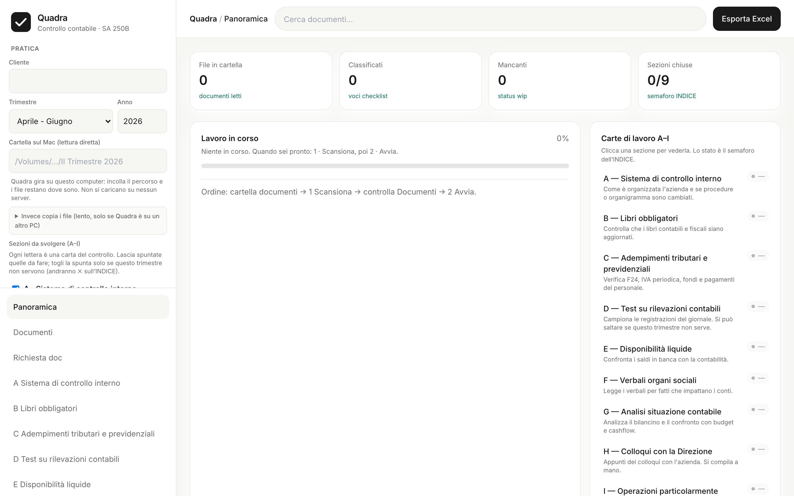

Controllo contabile trimestrale · SA Italia 250B · art. 2409-ter c.c.
Quadra prende la cartella documenti del trimestre e restituisce il working paper già compilato, con traccia di ogni cifra. La conclusione e la firma restano dello studio.

Ogni trimestre ripetiamo lo stesso lavoro meccanico: trovare F24, estratti, mastrini e verbali, spuntare la checklist, copiare i saldi sull’Excel. È tempo di assistente, non di revisione. Gli errori tipici sono di trascrizione, non di giudizio.
Non firma. Non scrive la conclusione. Non decide la materialità. Non decide se un controllo si salta. Non sostituisce il senior né DataSnipper.
L’output è una bozza di carte di lavoro. La responsabilità resta di chi rivede e firma.
Gira in locale: i documenti non escono dallo studio.
| Oggi | Con Quadra |
|---|---|
| Copia manuale da decine di file | Compilazione dal master unico, stesso per tutti i clienti |
| Stati usati in modo disomogeneo | Stessi codici, stesso significato |
| Difficile rintracciare una cifra | Ogni cella ha la fonte |
| L’INDICE si aggiorna a mano | Semaforo delle 9 sezioni calcolato, poi correggibile |
Abbiamo iniziato a testarlo sui controlli contabili, in locale. Funziona, ma è ancora un prototipo: non è in cloud e non è pronto da mettere su tutti i clienti.
Resta il lavoro dell’operatore: correggere i file classificati male e completare le carte di giudizio (colloqui con la Direzione; parti di controllo interno, test e operazioni significative).
Un parere: se ha senso continuare su questa strada, e con quale priorità rispetto al resto dello studio.